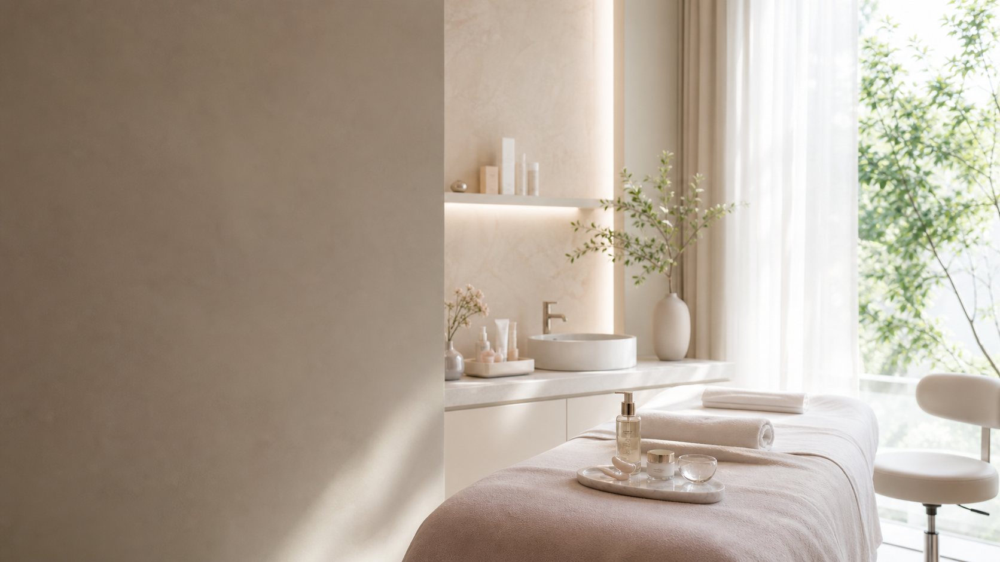

내 피부에 맞는 관리인지 모르겠어요
관리 전 체크리스트와 상담 과정을 보여주어 첫 방문의 부담을 줄입니다.
고민을 과하게 부풀리지 않고 현재 피부 상태, 생활 패턴, 예민도를 기준으로 관리 루틴을 설계하는 에스테틱샵 목업입니다.

에스테틱 랜딩은 불안감을 낮추는 정보 흐름이 중요합니다. 고민, 과정, 예약 전 확인 사항을 순서대로 배치했습니다.
관리 전 체크리스트와 상담 과정을 보여주어 첫 방문의 부담을 줄입니다.
프로그램별 목적, 시간, 추천 대상을 한 카드 안에서 비교할 수 있습니다.
예약 전 FAQ와 관리 후 안내를 함께 제공해 문의 전환을 자연스럽게 돕습니다.
스크롤에 맞춰 단계가 드러나도록 구성해, 복잡한 시술 설명도 부담 없이 읽히게 만들었습니다.
당일 컨디션, 예민도, 생활 패턴을 먼저 확인합니다.
피부 장벽에 부담을 줄이는 부드러운 준비 단계를 거칩니다.
수분, 탄력, 결 정돈 중 필요한 목표에 집중합니다.
관리 후 48시간 동안의 생활 팁과 다음 방문 주기를 안내합니다.
민감하고 붉은 피부를 위한 저자극 수분 진정 케어.
60분 / 70,000원건조함과 속당김을 함께 관리하는 대표 프로그램.
80분 / 110,000원메이크업 전 피부결 정돈과 은은한 광채 표현에 적합합니다.
70분 / 90,000원후기 슬라이더는 필요한 페이지에서만 작동하며 요소가 없어도 콘솔 오류가 나지 않도록 작성했습니다.
정적 페이지 기준의 CTA입니다. 실제 운영 시 예약 링크나 상담 채널로 교체하기 쉽도록 구성했습니다.